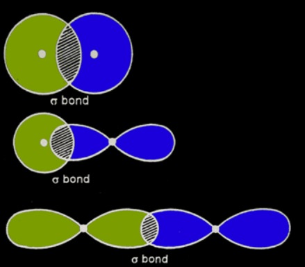
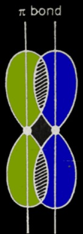
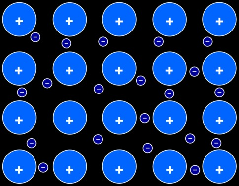

When we talk about chemistry, we talk about chemical compounds. We talk about what they’re made of and how they transform from one to another. This chapter is about what they’re made of.
Chemical compounds are made of atoms. You previously learned that atoms are made up of neutrons, protons and electrons. Those are held together by electrostatic forces and more complex quantum forces. But how are atoms in compounds held together? The short answer is: chemical bonds. The long answer will be the rest of this lesson.
But first of all, let’s talk about why atoms are grouped in chemical compounds.
Noble gases are all the elements in group 18. What do they all have in common? They are very stable on their own and hardly form any chemical compounds (however they do form some compounds, especially the heavier ones like xenon or krypton).
The base of all chemical compounds is the following fact - all atoms aim to achieve the electronic configuration of a noble gas. Generally, noble gases have a ns\(^2\)np\(^6\) electron configuration, called an octet configuration. The only exception is helium, which has a duplet structure 1s\(^2\), because the 1p orbital does not exist.
Atoms achieve this stable noble gas configuration through chemical bonding.
There are a number of different chemical bonds:
Atoms are electrically neutral, because the number of electrons is equal to the number of protons. Protons being located in the center of the atom, in the nucleus, cannot be eliminated by classical chemical processes (only by nuclear reactions). In contrast, electrons, located on the “periphery” of the atom, can be given up or accepted by atoms. Thus, by transferring electrons (giving up or accepting), species with an electrical charge called ions are born.
By giving up electrons, an atom will have more protons and fewer electrons (an electron deficit). Since the charge of protons is positive, the ion will be positively charged. These positively charged ions are called cations.
By accepting electrons, an atom will have fewer protons and more electrons (an electron surplus). Since the charge of electrons is negative, the ion will be negatively charged. These negatively charged ions are called anions.
The relative electric charge of an ion is the ratio between the charge of the ion and the elementary charge e = \(1.6 \cdot 10^{-19}\)C (equal to the charge of a proton and the opposite of the charge of an electron).
Let Z be the number of protons in an ion and N the number of electrons. The electric charge of the ion will be \(Q=+e \cdot Z + (-e) \cdot N = e(Z-N)\). The relative charge will be \(\frac{Q}{e} = Z - N\).
If n is the number of electrons given up to form a cation, \(N = Z - n\). Substituting into the expression for relative charge, we obtain that the relative charge of a cation is +n.
Analogously, the charge of an anion will be -n, where n is the number of electrons accepted.
The relative electric charge of an ion is written as an exponent next to the symbol of the element from whose atoms the ion comes. For example, the ion formed when a sulfur atom accepts an electron is denoted by S\(^-\), and the ion formed when iron loses 2 electrons is denoted by \(\ce{Fe^{2+}}\).
Two species (atoms or ions) are said to be isoelectronic if they have the same number of electrons. Elements tend to form ions that are isoelectronic to noble gases.
To represent the ionization of an atom (formation of an ion), we write:
\(\ce{V→V^{3+} + 3e-}\)
\(\ce{Se + 2e- → Se^{2-}}\)
One of the processes by which atoms can reach noble gas structures is ionization. This can happen in two ways:
1s\(^2\)2s\(^2\)2p\(^6\)3s\(^1\)
\(\ce{Na → Na^+ + e-}\)
1s\(^2\)2s\(^2\)2p\(^4\)
To have an octet on the last shell, oxygen can accept two electrons. O\(^{2-}\) ions are formed:\(\ce{O + 2e^- → O^{2-}}\)
In general, from the two possible ionization options, the element chooses the one that requires the transfer of a smaller number of electrons. For example, sodium will give up one electron, not accept 7, while oxygen will accept 2 electrons, not give up 6.
Elements that generally form cations are called metals, and those that generally form anions are called nonmetals. In the periodic table, metals and nonmetals are separated by a line (metals on the left, nonmetals on the right, but the elements near the line have intermediate properties and are called metalloids).
Nonmetals are also said to have electronegative character, and metals are said to have electropositive character. It can also be said that elements have metallic or nonmetallic electrochemical character.
Electrochemical character is described by a quantity called electronegativity. Electronegativity increases in a period from right to left and in a group from bottom to top. Thus, fluorine is the most electronegative element, and cesium is the most electropositive (the least electronegative) element.
Metals give up electrons to form their octet, and nonmetals accept electrons. Thus, a nonmetal can accept electrons given up by a metal and a certain amount of ions are formed (chemical process).
Between cations (positively charged) and anions (negatively charged) electrostatic attraction forces are established. These are considered chemical bonds. The compounds thus obtained are called ionic compounds.
Let us consider the example of sodium oxide (ionic compound formed from Na and O). The resulting ions are Na\(^+\) (gives up one electron) and O\(^{2-}\) (accepts two electrons). So, analyzing the number of electrons transferred, two sodium atoms (or ions) combine with one atom (or ion) of oxygen, so the formula will be Na\(_2\)O.
Covalent bonds are bonds created, usually, between atoms of nonmetals. Compounds which are made by covalent bonding are called covalent compounds, molecular compounds or simply molecules. Covalent compounds are by far the most numerous and complex compounds.
When two nonmetal atoms covalently bond, they both need to gain a number of electrons to achieve a stable structure. To do this, some of their orbitals in the last electron shell overlap in a way that the electrons found in those orbitals are now shared and belong to both atoms. They can no longer be attributed to one of the atoms.
In general, covalent bonds can be grouped by the number of electrons shared. The most common covalent bonds are simple bonds, double bonds and triple bonds.
Simple bonds are created when each atom contributes to the bond with one electron (so two electrons are shared in total). We say that this bond has a bond order of 1, and we represent the bond as a single straight line. Examples of compounds with single bonds are the hydrogen molecule H-H, water H-O-H or chlorine fluoride Cl-F.
Double bonds appear when each atom contributes to the bond with two electrons (four bonding electrons in total). The bond order is now 2, and the bond is represented as two parallel lines. Examples of compounds with a double bond are the oxygen molecule O=O, carbon dioxide O=C=O or nitrosyl chloride Cl-N=O.
Triple bonds appear when each atom contributes to the bond with….you guessed it - three electrons (six bonding electrons in total). The bond order is 3 and the bond is represented as three parallel lines. Example of such compounds include the nitrogen molecule \(\ce{N#N}\), acetylene \(\ce{H - C#C -H}\) or phosphorus mononitride \(\ce{P#N}\).
Depending on the geometry of the overlap of the two orbitals covalently bonding, bonds can be sigma bonds or pi bonds.
A sigma bond is created when the orbital overlap is coaxial (see the figure).
A pi bond appears when the orbital overlap is lateral (see the figure). Pi bonds can only be created by the overlap of p orbitals.
Pi bonds are weaker than sigma bonds. Especially in organic chemistry, you’ll often notice reactions that break pi bonds and leave sigma bonds intact.
Pi bonds don’t exist on their own, they exist only if a sigma bond is already formed between the two atoms.
So, a single bond is only made up of a sigma bond. When making a double bond we add a pi bond to the already existing sigma bond and when the bond becomes triple one more pi bond is created.
So single bond = 1σ, double bond = 1σ + 1π, triple bond = 1σ + 2π.
The metallic bond is a bond that appears between the atoms of a metal found in its pure state (or forming an alloy with another metal). In a metallic bond, the valence electrons of metal atoms (those electrons that would be given up in an ionization process) are no longer bound to the metal atoms and are free to move between atoms. This free movement of electrons can explain the high electric conductivity of metals.
Written by Alex Jicu